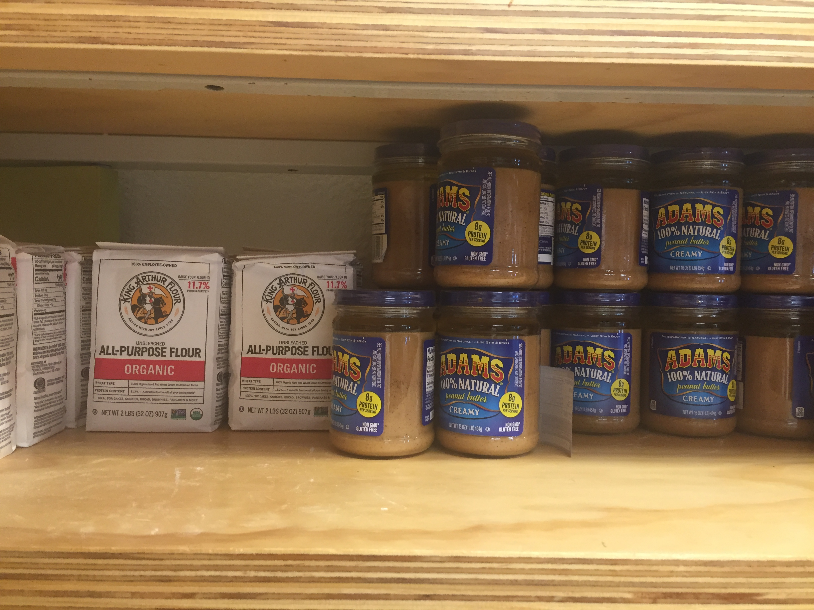

UC Berkeley Food Pantry
Food Insecurity: Part 2
To be perfectly honest, before I began this class I didn’t know what a public food pantry even was or that it existed. This is why I didn’t think too much about what the customers might be going through when I first arrived at the pantry.
The first person I interviewed while I was there was Mahum, the volunteer student worker who volunteered to handle the “purchases”. I first had to ask her what a food pantry is and what it’s purpose is beyond a grocery store. So, she explained to me that it ran on a “take what you need” system.
Mahum had been working there since the beginning of this semester, and she has had an overall pleasant experience. She volunteers there once per week, and as well as manning the cash register she also assists with the restocking of shipments. She feels good about being part of a cause that helps those with food insecurity, as she herself relates to the plight of having to skip meals either because of not enough money or not enough time in between part-time jobs. The whole experience means a lot to her in this way.
I also managed to catch a customer named Karen, a student who utilizes the food pantry. She told me that she likes the facility being very helpful and accessible for students, as they are able to stop by in between classes. In addition, the food available at the pantry is a lot healthier than what you’d find at a normal grocery store - this is actually the main reason she frequents the pantry.